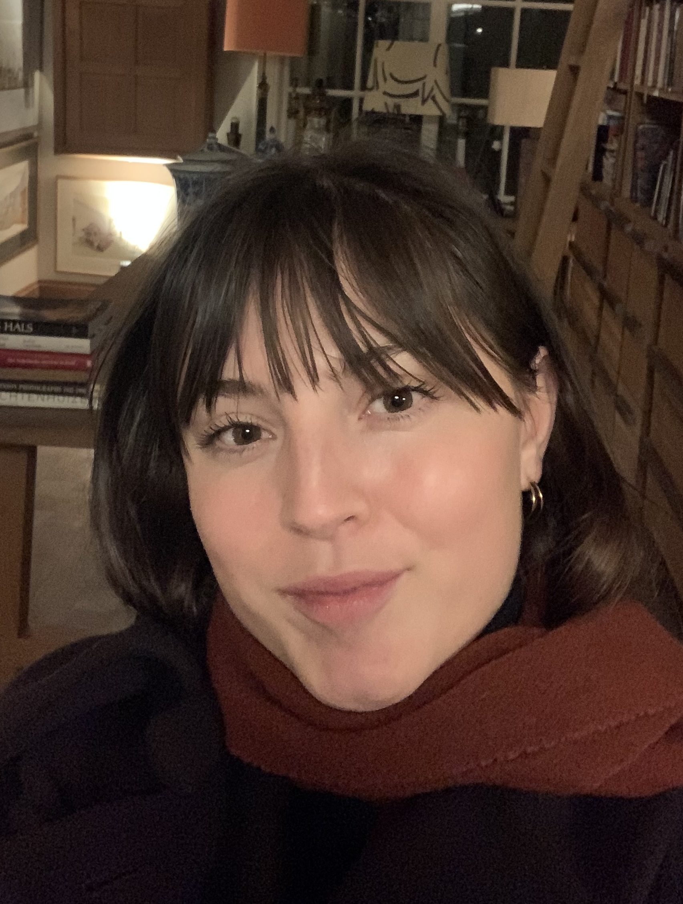

Hi reader,

How lovely that you have come to my bio. I thank you for the interest!Before telling you about my background, I like to offer you the essentials. As you know my name already, what's left to mention is that I am a 31 year old woman, born on the third of January 1995 in Roermond, The Netherlands.
I would describe myself as a kind, calm, open, curious, and creative person with many passions. Some of my favourite things to do - and there are many - are travelling, taking photos, writing, visiting a museum, going for long walks in nature, swimming, playing tennis, running, making music, and learning about a wide variety of topics. Ohh, and I should not forget to mention how much I enjoy deep conversations, and sharing a good laugh. Real connection and humour are things I value deeply.
In roermond, I grew up with my parents, my younger brother and our pets. With my father being an artist and art teacher, and my mother a French teacher, my love for art and languages was already built into my system. I had a very peaceful upbringing in a family of senstive yet resilient people, who all like to think outside of the box. Something that, I believe, contributed to my own calm and empathetic nature, as well as my desire for openmindedness.
After moving to Amsterdam to study Art History, I spent several formative years enjoying life in this city. The Dutch capital offered a freer, more artistic and more international atmosphere than the place I had grown up in, which felt exciting and liberating. Additionally, my studies also proved to be a good fit. Learning about art and history enriched me deeply and strengthened both my analytical skills and my appreciation for visual culture. All in all, this period helped me grow into a more knowledgeable, worldly and assertive version of myself.
Although I felt at home in Amsterdam, a desire to experience more of the world and live closer to nature gradually grew stronger. While completing my second master's, a South African adventure suddenly presented itself. After having lived in a restricted, hollow version of Amsterdam during the Covid 19 pandemic, the timing felt almost symbolic.
During the first weeks of living on the southern half, I was still under the impression that I would eventually return to Amsterdam, and apply to the jobs I had studied for. However, the life that unfolded in Knysna gradually altered some of my perspectives, and set me up for a different path. Even though I missed life in Amsterdam art first, living surrounded by mountains, forests and ocean redefined my sense of fulfilment. The ability to hike, swim or simply step into nature at a moment’s notice felt magnetic.
Additionally, starting a writing job at the time, while learning about SEO, doing some courses in programming, and slowly taking my love for photography more seriously, I realised that working freely and more creatively suited me well. I had loved my studies, and worked so hard for them, but felt a desire to keep pursuing this direction nonetheless. This website, and the services I offer now, all show the result of what sprouted during that phase.
South Africa was a beautiful adventure, yet one that naturally came to an end. Long term practicalities, and a desire to be closer to both family and friends and my roots, brought me back to Europe. After returning to the Netherlands and living back in Amsterdam for a while, my then partner and I decided to explore life in Southern France.
I had discovered my love for the Provence-Alpes-Côte d'Azur during a vacation, and had dreamt of living there ever since. Being able to make this dream reality felt like the biggest gift. To me, France offers a wonderful combination between nature, climate, and the European character that feels like home to me. Additionally, I turn out to be a real francophile, just like my mother, haha, and enjoyed emercing myself in the French language and atmosphere.
During this period, I worked in my first larger remote role as an SEO specialist. It allowed me to fully understand how strategy, structure and well-crafted content can significantly improve a company’s online visibility.
When my health and relationship took a turn, I returned to the Netherlands. The period that followed was one of deep recovery and realignment. In hindsight, I consider this to be a pivotal time in my life, which happened to make me a stronger, and wiser version of myself. And, as a result of this time, I found the courage to truly pursue my own business, IsMaRo, which allows me to do things in true accordance with my health, character, vision, and way of living.
Today, I focus on combining photography, SEO and thoughtful digital strategy from both France and the Netherlands. I hope to capture many more meaningful moments through my lens and help businesses grow sustainably through visibility and authentic storytelling. As for my personal life, I hope to experience many more adventures, and also just enjoy daily life, wherever that will be.
If you would like to connect - whether to discuss business, collaboration or simply exchange ideas - feel free to reach out through the contact button below. I would love to hear from you.